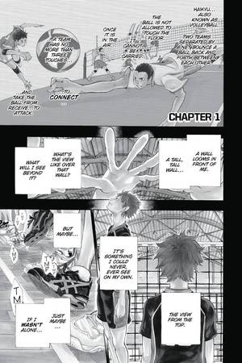

Haikyu!!
by Haruichi Furudate
Synopsis
Shoyo Hinata dreams of becoming a great volleyball player despite his short stature. Inspired by a star player known as the Little Giant, he joins his high school volleyball team, only to discover that his former rival, Tobio Kageyama, is now his teammate. Despite their clashing personalities, Hinata and Kageyama combine their talents to help Karasuno High School rise against formidable opponents and pursue their dream of reaching the national championship.
Chapter 1

Shoyo Hinata becomes fascinated with volleyball after watching a national tournament featuring a player nicknamed the Little Giant. Although he is shorter than most volleyball players, Hinata refuses to give up on his dream of competing at the highest level.
After entering high school, Hinata hopes to make an impact on the volleyball court. However, he faces an unexpected challenge when he reunites with Tobio Kageyama, the talented setter who defeated him during middle school. Their rivalry sets the stage for an unlikely partnership that could transform Karasuno's volleyball team.
— End of chapter —